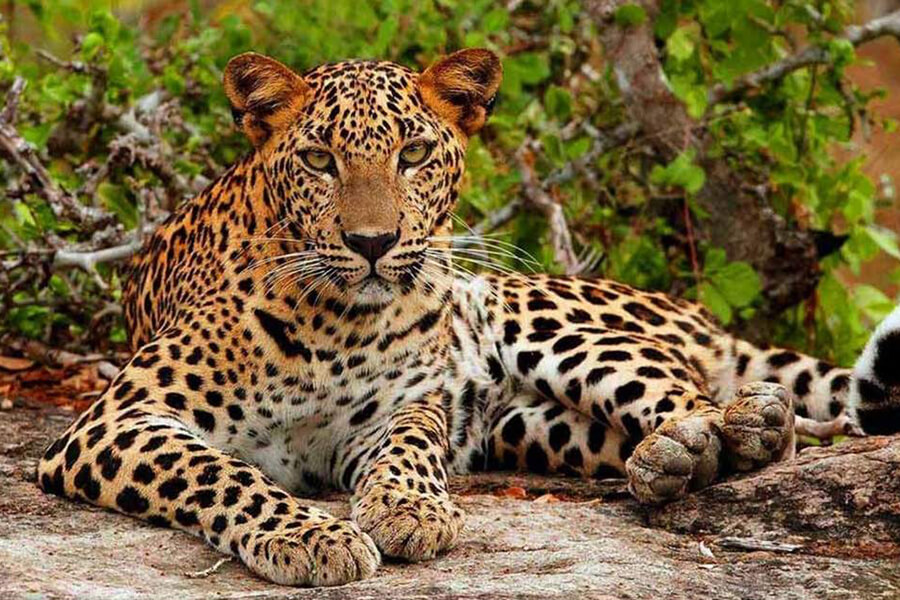
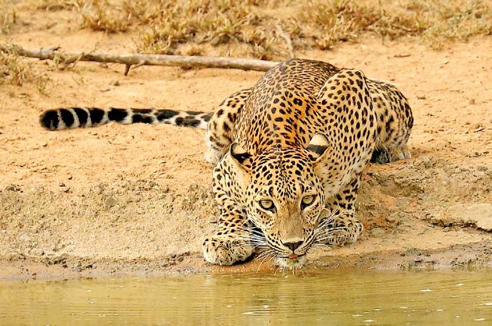
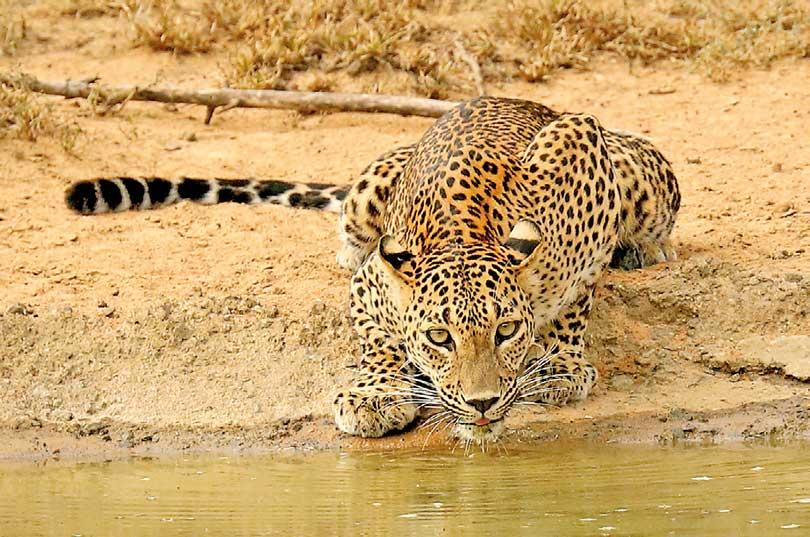
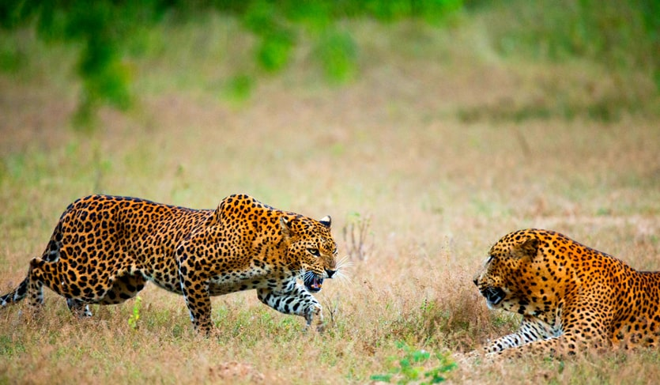
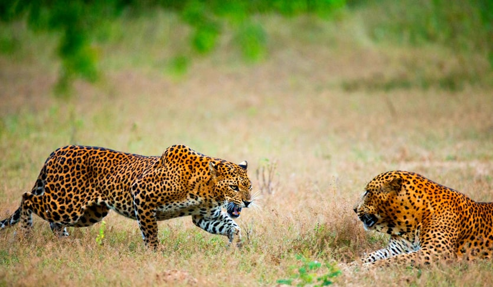

Udawalawe National Park
Udawalawe National Park in southern Sri Lanka spans 30,821 hectares and is renowned for its diverse wildlife, notably a large population of wild elephants. The park features grasslands, marshes, and forests, providing habitats for various species. It was established to protect the Udawalawe Reservoir, serving as a crucial water source for the region. Udawalawe is popular for safaris, offering opportunities to witness elephants, water buffaloes, deer, and a variety of bird species in their natural environment.
| Name | Fun Fact | Image |
|---|---|---|
| Elephant | Elephants have the largest brains among land animals, with an
average weight of around 5 kg (11 pounds) for an adult elephant brain. They are known for their intelligence and complex social structures. |
 |
| Leopard | Leopards stash their kills in trees to protect them. Their adaptability and agility make them highly successful big cats. |
 |
| Jackals | Jackals are recognized for their eerie howls and yelps, serving
as communication within the pack and marking territory. |
 |
| Crocodile | Crocodiles are remarkable survivors, having remained virtually unchanged for over 200 million years.
They are the apex predators in aquatic ecosystems. |
|
| Sloth Bear | Sloth bears use a unique vacuum-like technique to suck up
insects, aiding efficient foraging in their natural habitat. |
 |
| Explore the wildlife sanctuary for thrilling wildlife experiences! | ||
Udawalawe National Park Gallery


 



Bundala National Park
Bundala National Park in southeastern Sri Lanka is a diverse wildlife sanctuary known for its significant birdlife, especially during the winter migration. The park features lagoons, coastal areas, and various ecosystems, making it a haven for migratory birds like flamingos and pelicans. With an area of around 6216 hectares, Bundala is also home to elephants, crocodiles, and diverse reptiles, offering a unique and compact destination for nature lovers.


 
